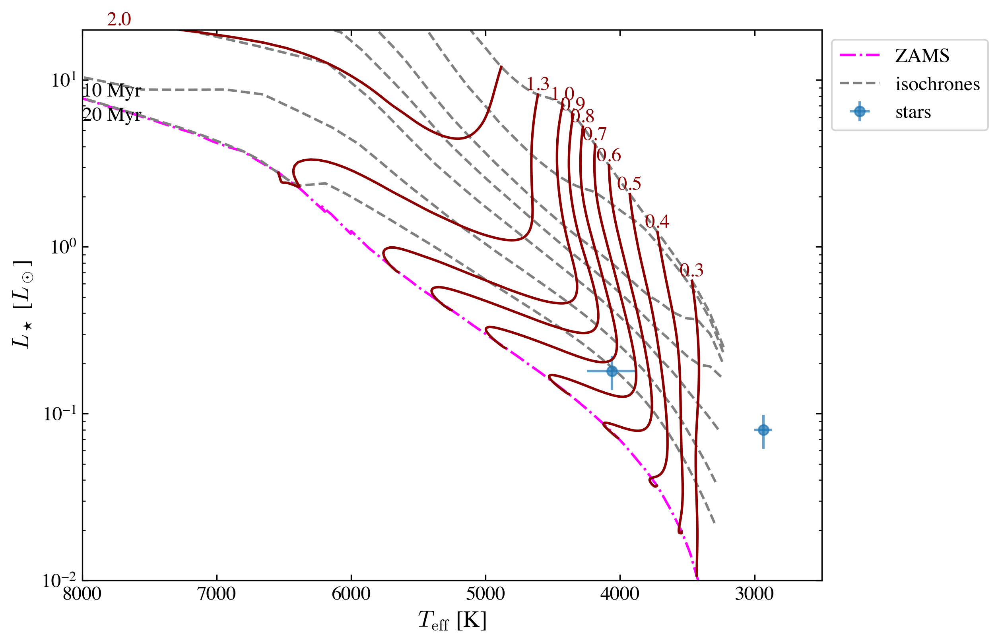
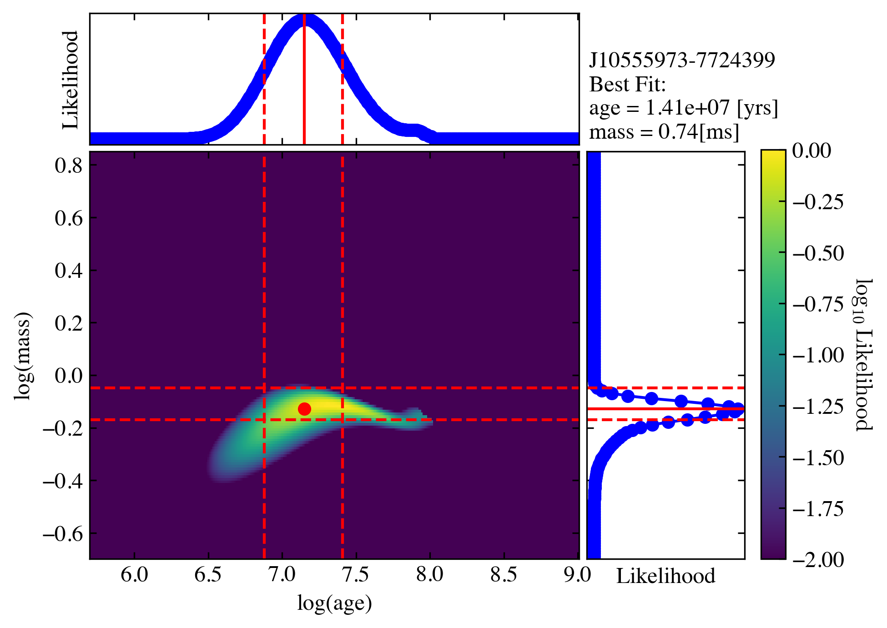

4. Apply ysoisochrone to a large dataset¶
[1]:
import numpy as np
import pandas as pd
import os, sys, tqdm, copy
import tqdm
import tqdm.notebook
import matplotlib.pyplot as plt
import matplotlib
style = [
# 'seaborn-ticks',
{
'figure.dpi': 300,
'font.size': 12,
'image.cmap': 'inferno',
'font.family': 'serif',
'font.serif': ['Times', 'Times New Roman'] + plt.rcParams['font.serif'],
'xtick.top': True,
'xtick.direction': 'in',
'ytick.right': True,
'ytick.direction': 'in',
'mathtext.fontset': 'cm'
}]
plt.style.use(style)
import scipy.io
[2]:
# github_dir = '/Users/dingshandeng/github/ysoisochrone/'
# # os.chdir(os.path.join(github_dir, 'tests'))
# sys.path.append(os.path.join(github_dir))
# import ysoisochrone.utils as utils
# import ysoisochrone.bayesian as bayesian
# import ysoisochrone.plotting as plotting
import ysoisochrone
[4]:
df_prop = pd.read_csv('/Users/dingshandeng/github/ysoisochrone/tutorial_notebooks/example_targets.csv', skiprows=6)
# For test targets from Lupus
toobright = [] # ['0']
toofaint = [] # ['0']
median_age = 1.0 # Myrs
err_Teff = ysoisochrone.utils.assign_unc_teff(df_prop['Teff[K]'].values)
err_Lumi = ysoisochrone.utils.assign_unc_lumi(df_prop['Luminosity[Lsun]'].values)
df_prop['e_Teff[K]'] = err_Teff
df_prop['e_Luminosity[Lsun]'] = err_Lumi
# you need to specify the source names
toobright = ['J11065906-7718535','J11094260-7725578',
'J11105597-7645325','J11183572-7935548']
toofaint = ['J10533978-7712338','J11063945-7736052','J11082570-7716396',
'J11111083-7641574','J11160287-7624533']
# the median age for Cham I star-forming region
median_age = 6.48 # Myrs, the age took from Pasucci+2016 choice
# form the df_toobright and df_toofaint only for plot
idx_toobright = []
idx_toofaint = []
for idx_t in df_prop.index:
if df_prop.loc[idx_t, 'Source'] in toobright:
idx_toobright.append(idx_t)
if df_prop.loc[idx_t, 'Source'] in toofaint:
idx_toofaint.append(idx_t)
df_toobright = df_prop.loc[idx_toobright]
df_toofaint = df_prop.loc[idx_toofaint]
[5]:
# ysoisochrone.plotting.simple_plot_hr_diagram_feiden_n_baraffe(df_prop)
Plot to show the tracks¶
Please check the most updated model section to see what are the available models. Here are some examples
‘Baraffe2015’, ‘Feiden2016’, ‘Feiden2016_magnetic’, ‘parsec_v1p2’, ‘parsec_v2p0’, ‘mist_v1p2’, ‘siess2000’, ‘spots0000’, ‘spots0169’, ‘spots0339’, ‘spots0508’, ‘spots0847’, ‘pisa’
[6]:
fig, ax = plt.subplots(figsize=(8, 6))
isochrone = ysoisochrone.isochrone.Isochrone()
# mat_file_dir = './isochrones_data/Baraffe_AgeMassGrid_YSO_up100Myrs_matrix.mat'
# isochrone.set_tracks('customize', load_file=mat_file_dir)
# isochrone.set_tracks('Feiden2016_magnetic')
isochrone.set_tracks('pisa') # "PISA"
ysoisochrone.plotting.plot_hr_diagram(isochrone, df_prop[1:3], ax_set=ax,
ages_to_plot=[0.5e6, 1.0e6, 2.0e6, 3.0e6, 5.0e6, 10.0e6, 20.0e6],
masses_to_plot=[0.1, 0.2, 0.3, 0.4, 0.5, 0.6, 0.7, 0.8, 0.9, 1.0, 1.3, 2.0],
xlim_set=[8000, 2500], ylim_set=[0.01, 20.0])
# ax.set_xlim(7000, 5000)
# ax.set_ylim(0.5, 10) # , 50.0)
# ax.set_xscale("log")
# ax.set_xlabel()
plt.show()
using the built in isochrones
-----------------------
0.10 Msun is skipped because it is smaller than the grid min mass of 0.20 Msun
0.20 Msun is skipped because it is smaller than the grid min mass of 0.20 Msun

Go through the whole table using the force_through option¶
In the original code, we need to manually mark the targets that are too bright or too faint, and if any target is falling outside of the track, the code raises a value error and stops there.
Normal behavior (force_through=False, default):
Raises a ValueError:
"The mass is the largest in the grid. This needs to be sorted out!
Consider extending the isochrone grid or removing this target from the list."
During mass estimation, the code marginalizes the 2D posterior to derive the best-fit mass. If the peak of the mass likelihood falls at the upper edge of the isochrone grid, this means the model grid doesn’t extend far enough to constrain the star’s mass from above – so that this target’s mass/age cannot be inferred correctly from the evolutionary tracks.
This is a safe choice but could be annoying if it is applied to a large dataset.
The new option: force_through¶
[!Important] Using force_through could be DANGEROUS, so please make sure to double-check the results that are flagged after the code.
force_through is a safety bypass flag — that controls how the function handles a specific failure case during Bayesian mass estimation.
with
force_through=True
Instead of raising an error, it:
Proceeds — continues with plotting and result collection without stopping
Clamps the upper mass uncertainty to the grid maximum (mass_unc[1] = log_masses_dummy[-1]), effectively saying “the upper bound is at least as large as the grid edge”
Emits a warning (if verbose=True) that the upper bound is artificially set and results are biased
Why it’s dangerous¶
The upper mass uncertainty is no longer physically meaningful — it’s just a grid boundary. The returned mass estimate is a lower bound on the true mass. Results should not be interpreted as reliable for scientific use.
Intended use¶
Testing and debugging only — for example, when experimenting with a new grid (like model=’pisa’ in the experimental notebooks) to check that the pipeline runs end-to-end before extending the grid to cover all targets properly.
The targets that have issues will also be flagged (stored in the flag_all).
The possible flag values are explained below.
[7]:
best_logmass_output, best_logage_output, lmass_all, lage_all, flag_all =\
ysoisochrone.bayesian.derive_stellar_mass_age(df_prop[1:3], model='pisa', plot=True, toobright=toobright, toofaint=toofaint, median_age=median_age, force_through=True)
0%| | 0/2 [00:00<?, ?it/s]
using the built in isochrones
-----------------------

100%|██████████| 2/2 [00:00<00:00, 4.75it/s]
using the built in isochrones
-----------------------
[8]:
print("logmass\n", best_logmass_output)
print("logage\n", best_logage_output)
print("flags\n", flag_all)
logmass
[[-0.12897 -0.16897 -0.04897]
[ nan nan nan]]
logage
[[7.14897 6.87897 7.40897]
[ nan nan nan]]
flags
['good', 'out_of_grid_T']
Possible flag values¶
flag_all is a list of strings (one per target star in df_prop). Flags are mutually exclusive per target.
goodSet when: Successful Bayesian estimation within the model grid Output: Valid values with uncertainties
toobrightSet when: Source name is in the toobright list Output: Mass via 1D Bayesian at youngest grid age; age = min(log_age); no age uncertainty
toofaintSet when: Source name is in the toofaint list Output: Mass via 1D Bayesian at median_age; age = median_age; no age uncertainty
out_of_grid_TSet when: Target’s logTeff falls outside the model grid range Output: All NaN
out_of_grid_LSet when: Target’s logL falls outside the model grid range Output: All NaN
out_of_grid_TLSet when: Both logTeff and logL are outside the model grid Output: All NaN